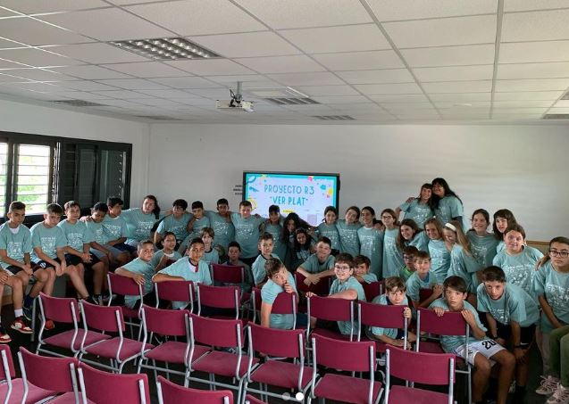
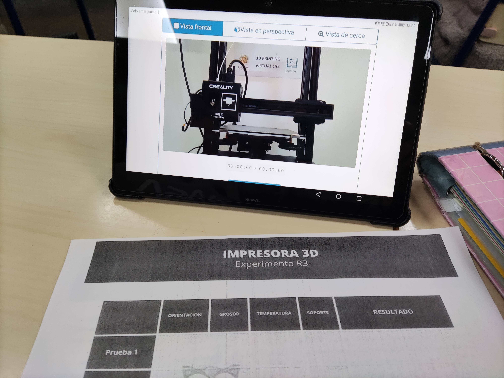
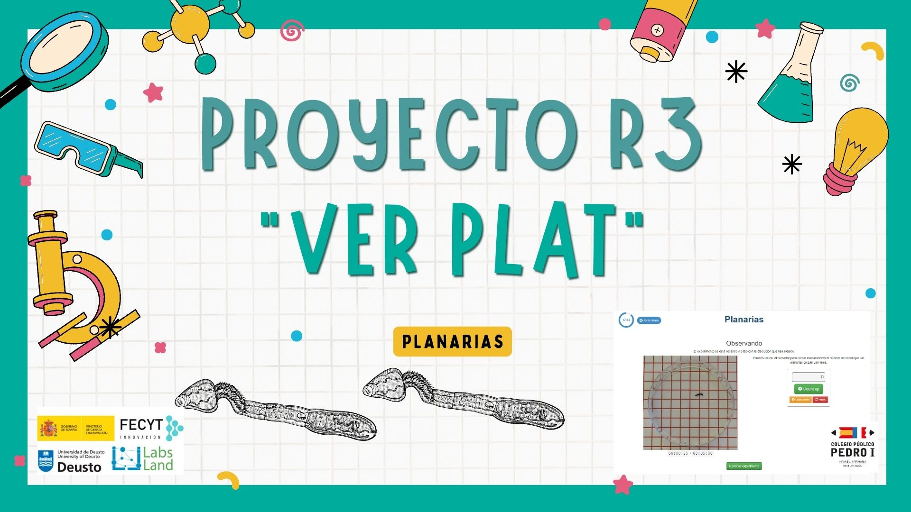
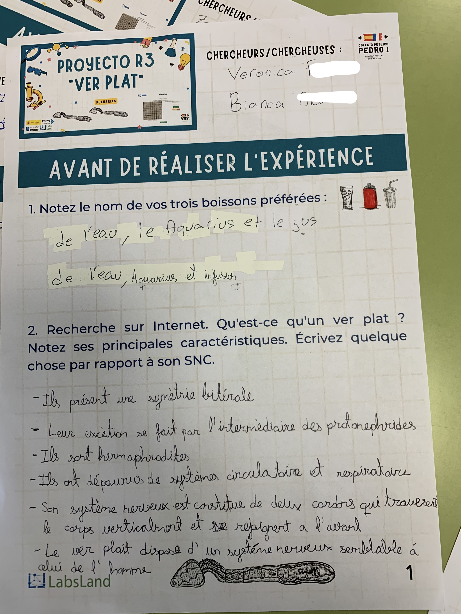
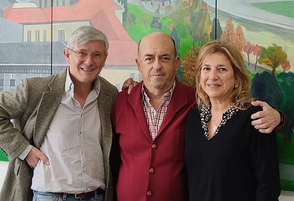
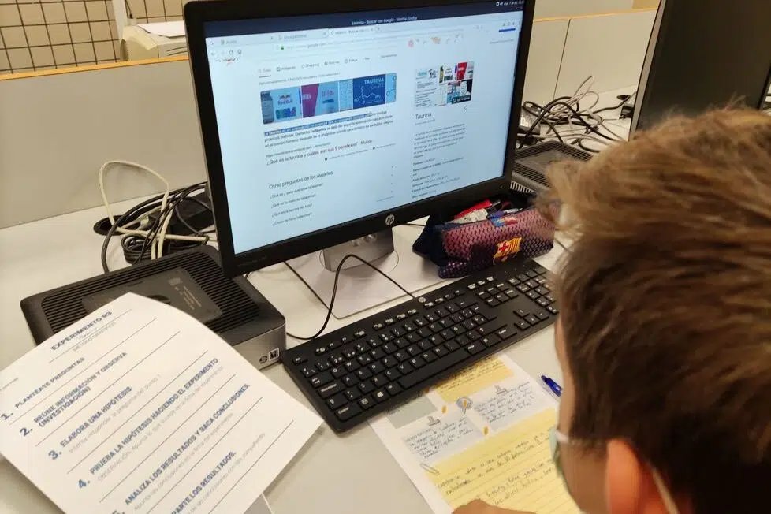

Con estas bonitas fotos con nuestras camisetas de "Ciencias para todos", ponemos fin al Proyecto R3 este curso en Huesca.
"Fin del Proyecto R3 en el CEIP Pedro I", por CEIP Pedro I
22 de junio de 2023
Con estas bonitas fotos con nuestras camisetas de "Ciencias para todos", ponemos fin al Proyecto R3.
Muchas gracias a todo el equipo que hay detrás por darnos la oportunidad de participar. En especial gracias a Javier y a Verónica por vuestro acompañamiento, ánimo e implicación para que todo saliera adelante. Ha sido un placer trabajar con vosotros.
El alumnado ha aprendido mucho y ha vivido una gran experiencia. Gracias por acercar los experimentos y la ciencia a los colegios.


13 de junio de 2023
Proyectos que inspiran IV: Proyecto R3
Eva Teba entrevista a Javier García Zubía y Verónica Canivell Castillo, creadores del R3 y profesores de la Universidad de Deusto.
Proyectos que inspiran IV: Proyecto R3", por Eva Teba
13 de junio de 2023
Eva Teba ha preparado este vídeo sobre el proyecto R3. En él, entrevista a Javier García Zubía y Verónica Canivell Castillo, creadores del R3 y profesores de la Universidad de Deusto.
Eva Teba es docente e investigadora, y está apasionada por la educación. En su canal, habla sobre su visión de la educación, ya que cree firmemente que si queremos construir una sociedad próspera y más humana, el camino es una educación con sentido.

5 de junio de 2023
¡Ya está finalizando el Proyecto R3 del curso 22-23!
Han participado más de 60 profesores y 600 estudiantes, la mayoría de escuelas rurales. El CEIP Pedro I nos envía sus avances con planarias.
Ya está finalizando el Proyecto R3 del curso 2022-23!
5 de junio de 2023
Han participado más de 60 profesores y 600 estudiantes, la mayoría de escuelas rurales. Se han recibido numerosos mensajes de satisfacción sobre la participación en el proyecto. Los niños y niñas han disfrutado y aprendido ciencia y tecnología con los experimentos remotos.
Ana Cadena, del CEIP Pedro I de Barbastro en Huesca, ha realizado el experimento de las planarias y nos envía una muestra.


27 de febrero de 2023
Visita de Manolo HH y RNE al proyecto
Manolo HH, periodista de RNE, visita la Universidad de Deusto para entrevistar a los coordinadores del Proyecto R3 para el programa "España rural".
Visita de Manolo HH a Deusto
27 de febrero de 2023
Manolo HH, periodista de RNE, ha visitado la Universidad de Deusto para entrevistar a Javier García Zubía y Verónica Canivell, coordinadores del Proyecto R3. La entrevista se incluirá en el programa “España rural” que lidera Manolo y aborda la realidad del territorio rural.
Javi y Verónica explican cómo tratan de promover el interés por la ciencia y la tecnología en los niños y niñas de las escuelas rurales mediante experimentos remotos y de esta manera promover la igualdad de oportunidades. El proyecto cuenta con el apoyo y financiación de FECYT, la Universidad de Deusto y LabsLand.

16 de junio de 2022
Mención en la revista Educación 3.0
"Cómo llevar a cabo experimentos (de forma remota) en las escuelas rurales". Un repaso al trabajo del CEIP Luis Vives de Xilxes.
"Cómo llevar a cabo experimentos (de forma remota) en las escuelas rurales"
16 de junio de 2022 | Por EDUCACIÓN 3.0
A través del proyecto R3, los estudiantes de 5º de Primaria de la escuela rural Lluis Vives de Xilxes, en Castellón, han podido fomentar sus dotes científicas mediante un experimento remoto y sin necesidad de contar con equipamiento de laboratorio. Nos lo cuenta la docente María Traver Isach.
El proyecto ‘Rural, Remoto y Real R3: Fomento de vocaciones CTIM en escuelas rurales mediante experimentación remota’ es una iniciativa de la Universidad de Deusto en colaboración con la FECYT y la empresa LabsLand. El objetivo principal es paliar una carencia del mundo rural que afecta al desarrollo personal de los estudiantes ya que muchos centros rurales no cuentan con equipamiento científico adecuado debido a su tamaño y aislamiento.